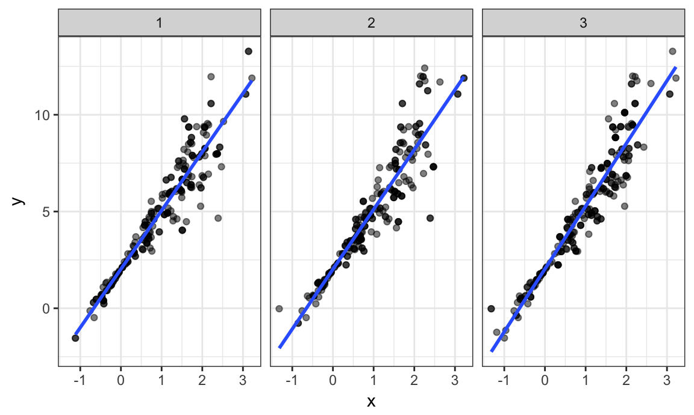
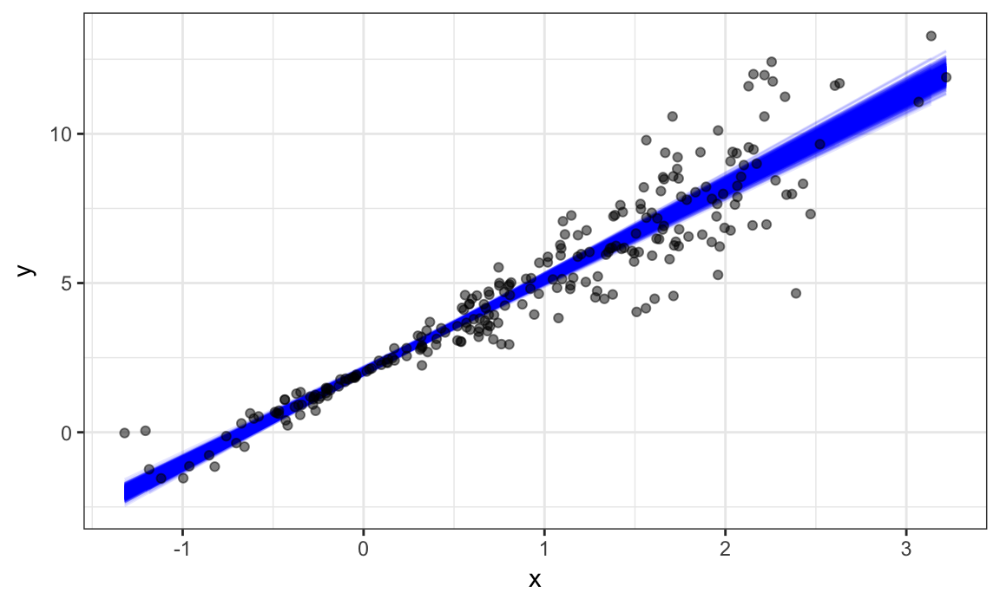

R’s data structures, especially data frames, are surprisingly flexible. This is useful when the “observations” you want to store become more complex than single values; for example, each row many contain a few scalar observations as well a complete data set. In these cases, list columns are an appropriate column type, and map functions provide a way to interact with those columns.
Bootstrapping is a popular resampling-based approach to statistical inference, and is helpful when usual statistical methods are intractable or inappropriate. The idea is to draw repeated samples from your original sample with replacement, thereby approximating the repeated sampling framework. Using list columns to store bootstrap samples is natural and provides a “tidy” approach to resampling-based inference.
This is the third module in the Iteration topic; the relevant slack channel is here.
I’ll write code for today’s content in a new R Markdown document called listcols_and_bootstrapping.Rmd in the example_iteration directory / repo. The code chunk below loads the usual packages.
library(tidyverse)
## ── Attaching packages ────────────────────────────────────────────────────────────────────────────────────────────────────────────────────────────────────────────────────────── tidyverse 1.2.1 ──
## ✔ ggplot2 2.2.1 ✔ purrr 0.2.4
## ✔ tibble 1.3.4 ✔ dplyr 0.7.4
## ✔ tidyr 0.7.2 ✔ stringr 1.2.0
## ✔ readr 1.1.1 ✔ forcats 0.2.0
## Warning: package 'tidyr' was built under R version 3.4.2
## Warning: package 'purrr' was built under R version 3.4.2
## Warning: package 'dplyr' was built under R version 3.4.2
## ── Conflicts ───────────────────────────────────────────────────────────────────────────────────────────────────────────────────────────────────────────────────────────── tidyverse_conflicts() ──
## ✖ dplyr::filter() masks stats::filter()
## ✖ dplyr::lag() masks stats::lag()
theme_set(theme_bw())
theme_update(legend.position = "bottom")
set.seed(1)Things are gonna get a little weird…
We’ll start by revisiting the weather data from visualization; these data consist of one year of observations from three monitoring stations. The code below pulls these data into R (using the rnoaa package, which interacts with the NOAA API).
library(rnoaa)
weather =
meteo_pull_monitors(c("USW00094728", "USC00519397", "USS0023B17S"),
var = c("PRCP", "TMIN", "TMAX"),
date_min = "2016-01-01",
date_max = "2016-12-31") %>%
mutate(
name = recode(id, USW00094728 = "CentralPark_NY",
USC00519397 = "Waikiki_HA",
USS0023B17S = "Waterhole_WA"),
tmin = tmin / 10,
tmax = tmax / 10) %>%
select(name, id, everything())The station name and id are constant across the year’s temperature and precipitation data. For that reason, we can reorganize these data into a new data frame with a single row for each station. Weather data will be separated into three station-specific data frames, each of which is the data “observation” for the respective station.
weather_nest =
nest(weather, date:tmin)
weather_nest
## # A tibble: 3 x 3
## name id data
## <chr> <chr> <list>
## 1 CentralPark_NY USW00094728 <tibble [366 x 4]>
## 2 Waikiki_HA USC00519397 <tibble [366 x 4]>
## 3 Waterhole_WA USS0023B17S <tibble [366 x 4]>Here I’ve used nest to nest a specified column range within remaining variable values.
The name column is a character column – if you pull this column from the weather data frame, the result is a character vector. Similarly, the data column is a list column – on it’s own, it’s a list.
weather_nest %>% pull(name)
## [1] "CentralPark_NY" "Waikiki_HA" "Waterhole_WA"
weather_nest %>% pull(data)
## [[1]]
## # A tibble: 366 x 4
## date prcp tmax tmin
## <date> <dbl> <dbl> <dbl>
## 1 2016-01-01 0 5.6 1.1
## 2 2016-01-02 0 4.4 0.0
## 3 2016-01-03 0 7.2 1.7
## 4 2016-01-04 0 2.2 -9.9
## 5 2016-01-05 0 -1.6 -11.6
## 6 2016-01-06 0 5.0 -3.8
## 7 2016-01-07 0 7.8 -0.5
## 8 2016-01-08 0 7.8 -0.5
## 9 2016-01-09 0 8.3 4.4
## 10 2016-01-10 457 15.0 4.4
## # ... with 356 more rows
##
## [[2]]
## # A tibble: 366 x 4
## date prcp tmax tmin
## <date> <dbl> <dbl> <dbl>
## 1 2016-01-01 0 29.4 16.7
## 2 2016-01-02 0 28.3 16.7
## 3 2016-01-03 0 28.3 16.7
## 4 2016-01-04 0 28.3 16.1
## 5 2016-01-05 0 27.2 16.7
## 6 2016-01-06 0 27.2 20.0
## 7 2016-01-07 46 27.8 18.3
## 8 2016-01-08 3 28.3 17.8
## 9 2016-01-09 8 27.8 19.4
## 10 2016-01-10 3 28.3 18.3
## # ... with 356 more rows
##
## [[3]]
## # A tibble: 366 x 4
## date prcp tmax tmin
## <date> <dbl> <dbl> <dbl>
## 1 2016-01-01 0 1.7 -5.9
## 2 2016-01-02 25 -0.1 -6.0
## 3 2016-01-03 0 -5.0 -10.0
## 4 2016-01-04 25 0.3 -9.8
## 5 2016-01-05 25 1.9 -1.8
## 6 2016-01-06 25 1.4 -2.6
## 7 2016-01-07 0 1.4 -3.9
## 8 2016-01-08 0 1.1 -4.0
## 9 2016-01-09 0 1.4 -4.5
## 10 2016-01-10 0 2.3 -3.8
## # ... with 356 more rowsThe list column really is a list, and will behave as such elsewhere in R. So, for example, you can examine the first list entry using usual list index procedures.
weather_nest$data[[1]]
## # A tibble: 366 x 4
## date prcp tmax tmin
## <date> <dbl> <dbl> <dbl>
## 1 2016-01-01 0 5.6 1.1
## 2 2016-01-02 0 4.4 0.0
## 3 2016-01-03 0 7.2 1.7
## 4 2016-01-04 0 2.2 -9.9
## 5 2016-01-05 0 -1.6 -11.6
## 6 2016-01-06 0 5.0 -3.8
## 7 2016-01-07 0 7.8 -0.5
## 8 2016-01-08 0 7.8 -0.5
## 9 2016-01-09 0 8.3 4.4
## 10 2016-01-10 457 15.0 4.4
## # ... with 356 more rowsOf course, if you can nest data you should be able to unnest it as well, and you can (with the caveat that you’re unnesting a list column that contains a data frame).
unnest(weather_nest)
## # A tibble: 1,098 x 6
## name id date prcp tmax tmin
## <chr> <chr> <date> <dbl> <dbl> <dbl>
## 1 CentralPark_NY USW00094728 2016-01-01 0 5.6 1.1
## 2 CentralPark_NY USW00094728 2016-01-02 0 4.4 0.0
## 3 CentralPark_NY USW00094728 2016-01-03 0 7.2 1.7
## 4 CentralPark_NY USW00094728 2016-01-04 0 2.2 -9.9
## 5 CentralPark_NY USW00094728 2016-01-05 0 -1.6 -11.6
## 6 CentralPark_NY USW00094728 2016-01-06 0 5.0 -3.8
## 7 CentralPark_NY USW00094728 2016-01-07 0 7.8 -0.5
## 8 CentralPark_NY USW00094728 2016-01-08 0 7.8 -0.5
## 9 CentralPark_NY USW00094728 2016-01-09 0 8.3 4.4
## 10 CentralPark_NY USW00094728 2016-01-10 457 15.0 4.4
## # ... with 1,088 more rowsNesting columns can help with data organization and comprehension by masking complexity you’re less concerned about right now and clarifying the things you are concerned about. In the weather data, it can be helpful to think of stations as the basic unit of observation, and daily weather recordings as a more granular level of observation. Nesting can also simplify the use of analytic approaches across levels of a higher variable.
You will need to be able to manipulate list columns, but usual operations for columns that might appear in mutate (like mean or recode) often don’t apply to the entries in a list column.
Instead, recognizing list columns as list columns motivates an approach for working with nested data frames.
Suppose we want to fit the simple linear regression relating tmax to tmin for each station-specific data frame. First I’ll write a quick function that takes a data frame as the sole argument to fit this model.
weather_lm = function(df) {
lm(tmax ~ tmin, data = df)
}Let’s make sure this works on a single data frame.
weather_lm(weather_nest$data[[1]])
##
## Call:
## lm(formula = tmax ~ tmin, data = df)
##
## Coefficients:
## (Intercept) tmin
## 7.779 1.045Great! Keeping in mind that weather$data is a list, we can apply our weather_lm function to each data frame using map.
map(weather_nest$data, weather_lm)
## [[1]]
##
## Call:
## lm(formula = tmax ~ tmin, data = df)
##
## Coefficients:
## (Intercept) tmin
## 7.779 1.045
##
##
## [[2]]
##
## Call:
## lm(formula = tmax ~ tmin, data = df)
##
## Coefficients:
## (Intercept) tmin
## 22.489 0.326
##
##
## [[3]]
##
## Call:
## lm(formula = tmax ~ tmin, data = df)
##
## Coefficients:
## (Intercept) tmin
## 6.851 1.245I’ll also note that you can avoid the creation of a dedicated function using map’s syntax for “anonymous” (i.e. not named and saved) functions.
map(weather_nest$data, ~lm(tmax ~ tmin, data = .x))
## [[1]]
##
## Call:
## lm(formula = tmax ~ tmin, data = .x)
##
## Coefficients:
## (Intercept) tmin
## 7.779 1.045
##
##
## [[2]]
##
## Call:
## lm(formula = tmax ~ tmin, data = .x)
##
## Coefficients:
## (Intercept) tmin
## 22.489 0.326
##
##
## [[3]]
##
## Call:
## lm(formula = tmax ~ tmin, data = .x)
##
## Coefficients:
## (Intercept) tmin
## 6.851 1.245The map function returns a list; I guess we could store the results as a new list column … !!!
We’ve been using mutate to define a new variable in a data frame, especially one that is a function of an existing variable. That’s exactly what we will keep doing.
weather_nest =
weather_nest %>%
mutate(models = map(data, weather_lm))
weather_nest
## # A tibble: 3 x 4
## name id data models
## <chr> <chr> <list> <list>
## 1 CentralPark_NY USW00094728 <tibble [366 x 4]> <S3: lm>
## 2 Waikiki_HA USC00519397 <tibble [366 x 4]> <S3: lm>
## 3 Waterhole_WA USS0023B17S <tibble [366 x 4]> <S3: lm>This is great! Specifically, we now have a data frame that has rows for each station; columns contain weather datasets and fitted models. This makes it very easy to keep track of models across stations, and to perform additional analyses.
That said, a list column that contains fitted models might not be immediately helpful. We will generally want to extract some information about the model fit, and I generally recommend broom::tidy. That function (which we’ve seen in passing) produces a data frame.
lm(tmax ~ tmin, data = weather_nest$data[[1]]) %>%
broom::tidy()
## term estimate std.error statistic p.value
## 1 (Intercept) 7.779171 0.22116552 35.17352 3.883698e-119
## 2 tmin 1.044830 0.01638279 63.77608 1.229687e-199All together, we have a possible data analytic pipeline. First, nest data within stations; then fit models for each station; then tidy the result, saving the result in a new list column. Since tidy produces a data frame, we can unnest the result after removing intermediate list columns and check out the result. The complete analytic pipeline is in the chunk below.
weather_analysis =
weather %>%
nest(date:tmin) %>%
mutate(models = map(data, weather_lm),
results = map(models, broom::tidy)) %>%
select(-data, -models) %>%
unnest()
weather_analysis
## # A tibble: 6 x 7
## name id term estimate std.error statistic
## <chr> <chr> <chr> <dbl> <dbl> <dbl>
## 1 CentralPark_NY USW00094728 (Intercept) 7.7791711 0.22116552 35.17352
## 2 CentralPark_NY USW00094728 tmin 1.0448303 0.01638279 63.77608
## 3 Waikiki_HA USC00519397 (Intercept) 22.4887437 0.54052668 41.60524
## 4 Waikiki_HA USC00519397 tmin 0.3259609 0.02477356 13.15761
## 5 Waterhole_WA USS0023B17S (Intercept) 6.8507057 0.14323379 47.82884
## 6 Waterhole_WA USS0023B17S tmin 1.2448124 0.02864309 43.45942
## # ... with 1 more variables: p.value <dbl>This is, for sure, a fairly complex bit of code, but in just a few lines we’re able to fit separate linear models to each of our stations and extract the results. And, once you get used to list columns, map, and the rest of it, these lines of code are pretty clear.
I should note that this isn’t, generally speaking, the best way to analyze data like these. We have datasets nested within stations – for that kind of “multilevel” data, a hierarchical or random effects model is more appropriate. But this is a quick and easy way to get useful answers in an exploratory context.
Let’s revisit the Instacart data (download here) as well as a quick second example.
instacart = read_csv("./data/instacart_train_data.csv.zip")
## Parsed with column specification:
## cols(
## order_id = col_integer(),
## product_id = col_integer(),
## add_to_cart_order = col_integer(),
## reordered = col_integer(),
## user_id = col_integer(),
## eval_set = col_character(),
## order_number = col_integer(),
## order_dow = col_integer(),
## order_hour_of_day = col_integer(),
## days_since_prior_order = col_integer(),
## product_name = col_character(),
## aisle_id = col_integer(),
## department_id = col_integer(),
## aisle = col_character(),
## department = col_character()
## )
instacart
## # A tibble: 1,384,617 x 15
## order_id product_id add_to_cart_order reordered user_id eval_set
## <int> <int> <int> <int> <int> <chr>
## 1 1 49302 1 1 112108 train
## 2 1 11109 2 1 112108 train
## 3 1 10246 3 0 112108 train
## 4 1 49683 4 0 112108 train
## 5 1 43633 5 1 112108 train
## 6 1 13176 6 0 112108 train
## 7 1 47209 7 0 112108 train
## 8 1 22035 8 1 112108 train
## 9 36 39612 1 0 79431 train
## 10 36 19660 2 1 79431 train
## # ... with 1,384,607 more rows, and 9 more variables: order_number <int>,
## # order_dow <int>, order_hour_of_day <int>,
## # days_since_prior_order <int>, product_name <chr>, aisle_id <int>,
## # department_id <int>, aisle <chr>, department <chr>There are a variety of ways we might nest these data – by order, by aisle, by department – depending on the granularity we’re interested in. I’ll group by department, and also focus on only a few departments.
instacart_nest =
instacart %>%
group_by(department) %>%
nest() %>%
filter(department %in% c("deli", "produce", "snacks", "beverages"))
instacart_nest
## # A tibble: 4 x 2
## department data
## <chr> <list>
## 1 produce <tibble [409,087 x 14]>
## 2 beverages <tibble [114,046 x 14]>
## 3 deli <tibble [44,291 x 14]>
## 4 snacks <tibble [118,862 x 14]>I’ve used another way to implement nest by preceding that function with a group_by call. I’ve also used filter after nest; in fact, data frames with list columns can be manipulated in the same ways as other data frames using tidyverse tools.
Instead of fitting a regression, I’d like to extract a summary of order_hour_of_day for each department-specific data frame. The summary function produces a nice collection of metrics, but not a data frame; luckily the broom::tidy function is applicable here as well.
instacart_nest %>%
mutate(sub_df = map(data, ~summary(.x[["order_hour_of_day"]])),
tidy_summary = map(sub_df, broom::tidy)) %>%
select(-data, -sub_df) %>%
unnest()
## # A tibble: 4 x 7
## department minimum q1 median mean q3 maximum
## <chr> <dbl> <dbl> <dbl> <dbl> <dbl> <dbl>
## 1 produce 0 10 14 13.55972 16 23
## 2 beverages 0 10 13 13.48292 16 23
## 3 deli 0 11 14 13.61703 17 23
## 4 snacks 0 10 14 13.54126 16 23That’s pretty neat!
Bootstrapping is based on the idea of repeated sampling which underlies most approaches to statistical inference. Traditionally, the distribution of a sample statistic (sample mean, SLR coefficients, etc.) for repeated, random draws from a population has been established theoretically. These theoretical distributions make some assumptions about the underlying population from which samples are drawn, or depend on large sample sizes for asymptotic results.
In cases where the assumptions aren’t met, or sample sizes aren’t large enough for asymptotics to kick in, it is still necessary to make inferences using the sample statistic. In these cases, drawing repeatedly from the original population would be great – one could simple draw a lot of samples and look at the empirical (rather than theoretical) distribution. But, as we said in iteration and simulation, repeated sampling just doesn’t happen in the real world.
Repeated sampling can happen on a computer though. To bootstrap, one draws repeated samples (with the same sample size) from the original sample with replacement to mimic the process of drawing repeated samples from the population. The bootstrap samples will differ from the original sample, and the sample statistic of interest (sample mean, SLR coefficients, etc.) can be computed for each bootstrap sample. Looking at the distribution of the statistic across samples gives a sense of the uncertainty in the estimate.
Let’s look at a couple of simulated data sets. Both are generated from a simple linear regression, but they have different error distributions.
n_samp = 250
sim_df_const = tibble(
x = rnorm(n_samp, 1, 1),
error = rnorm(n_samp, 0, 1),
y = 2 + 3 * x + error
)
sim_df_nonconst = sim_df_const %>%
mutate(
error = error * .75 * x,
y = 2 + 3 * x + error
)
bind_rows(
mutate(sim_df_const, data = "sim_df_const"),
mutate(sim_df_nonconst, data = "sim_df_nonconst")
) %>%
ggplot(aes(x = x, y = y)) +
geom_point() +
stat_smooth(method = "lm") +
facet_grid(~data) These datasets have roughly the same overall variance, but the left panel shows data with constant variance and the right panel shows data with non-constant variance. For this reason, ordinary least squares should provide reasonable estimates in both cases, but inference is standard inference approaches may only be justified for the data on the left.
The output below shows results from fitting simple linear regressions to both datasets.
lm(y ~ x, data = sim_df_const) %>% summary()
##
## Call:
## lm(formula = y ~ x, data = sim_df_const)
##
## Residuals:
## Min 1Q Median 3Q Max
## -3.7782 -0.7170 -0.0534 0.6775 2.6549
##
## Coefficients:
## Estimate Std. Error t value Pr(>|t|)
## (Intercept) 2.01421 0.10728 18.77 <2e-16 ***
## x 3.03431 0.06649 45.64 <2e-16 ***
## ---
## Signif. codes: 0 '***' 0.001 '**' 0.01 '*' 0.05 '.' 0.1 ' ' 1
##
## Residual standard error: 1.101 on 248 degrees of freedom
## Multiple R-squared: 0.8936, Adjusted R-squared: 0.8932
## F-statistic: 2083 on 1 and 248 DF, p-value: < 2.2e-16
lm(y ~ x, data = sim_df_nonconst) %>% summary()
##
## Call:
## lm(formula = y ~ x, data = sim_df_nonconst)
##
## Residuals:
## Min 1Q Median 3Q Max
## -7.0010 -0.4426 -0.0113 0.4326 5.3454
##
## Coefficients:
## Estimate Std. Error t value Pr(>|t|)
## (Intercept) 1.86558 0.13464 13.86 <2e-16 ***
## x 3.17478 0.08344 38.05 <2e-16 ***
## ---
## Signif. codes: 0 '***' 0.001 '**' 0.01 '*' 0.05 '.' 0.1 ' ' 1
##
## Residual standard error: 1.382 on 248 degrees of freedom
## Multiple R-squared: 0.8537, Adjusted R-squared: 0.8532
## F-statistic: 1448 on 1 and 248 DF, p-value: < 2.2e-16Despite the very different error structures, standard errors for coefficient estimates are similar in both cases!
We’ll use the bootstrap to make inference for the data on the right. This is intended largely as an illustration for how to use the bootstrap in cases where the theoretical distribution is “unknown”, although for these data in particular weighted least squares is more appropriate.
Let’s write a quick function to generate our bootstrap samples. This function should have the data frame as the argument, and should return a sample from that dataframe drawn with replacement.
boot_sample = function(df) {
sample_frac(df, replace = TRUE)
}We should also do a quick check to see if this is working.
boot_sample(sim_df_nonconst)
## # A tibble: 250 x 3
## x error y
## <dbl> <dbl> <dbl>
## 1 0.8143844 0.378151316 4.821305
## 2 2.5324943 0.003005011 9.600488
## 3 0.7643021 -0.406254684 3.886652
## 4 0.4130584 -0.073713187 3.165462
## 5 0.4468188 -0.189337605 3.151119
## 6 1.7516382 0.113639546 7.368554
## 7 0.3410232 -0.466086551 2.556983
## 8 1.4392126 -0.356144561 5.961493
## 9 0.5995801 0.963949357 4.762690
## 10 1.7566668 0.161468988 7.431470
## # ... with 240 more rowsThat looks about right.
We’re going to draw repeated samples with replacement, and then analyze each of those samples separately. It would be really great to have a data structure that makes it possible to keep track of everything. Maybe a list column??!
Let’s give that a try:
boot_straps = data_frame(
strap_number = 1:100,
strap_sample = rerun(100, boot_sample(sim_df_nonconst))
)
boot_straps
## # A tibble: 100 x 2
## strap_number strap_sample
## <int> <list>
## 1 1 <tibble [250 x 3]>
## 2 2 <tibble [250 x 3]>
## 3 3 <tibble [250 x 3]>
## 4 4 <tibble [250 x 3]>
## 5 5 <tibble [250 x 3]>
## 6 6 <tibble [250 x 3]>
## 7 7 <tibble [250 x 3]>
## 8 8 <tibble [250 x 3]>
## 9 9 <tibble [250 x 3]>
## 10 10 <tibble [250 x 3]>
## # ... with 90 more rowsWe can do a few of quick checks to make sure this has worked as intended. First we’ll look at a couple of bootstrap samples.
boot_straps %>%
filter(strap_number %in% 1:2) %>%
mutate(strap_sample = map(strap_sample, ~arrange(.x, x))) %>%
pull(strap_sample)
## [[1]]
## # A tibble: 250 x 3
## x error y
## <dbl> <dbl> <dbl>
## 1 -1.5308715 1.49730217 -1.0953124
## 2 -1.5308715 1.49730217 -1.0953124
## 3 -1.2329380 -1.97958137 -3.6783954
## 4 -1.2329380 -1.97958137 -3.6783954
## 5 -0.9901198 -0.49614878 -1.4665082
## 6 -0.9901198 -0.49614878 -1.4665082
## 7 -0.9083691 1.06963768 0.3445302
## 8 -0.9060899 -0.03923387 -0.7575034
## 9 -0.9060899 -0.03923387 -0.7575034
## 10 -0.6164885 -0.48290977 -0.3323753
## # ... with 240 more rows
##
## [[2]]
## # A tibble: 250 x 3
## x error y
## <dbl> <dbl> <dbl>
## 1 -2.0234321 -2.02348598 -6.0937823
## 2 -2.0234321 -2.02348598 -6.0937823
## 3 -1.2329380 -1.97958137 -3.6783954
## 4 -0.9164560 -0.71560010 -1.4649682
## 5 -0.9083691 1.06963768 0.3445302
## 6 -0.9083691 1.06963768 0.3445302
## 7 -0.6164885 -0.48290977 -0.3323753
## 8 -0.5944465 1.63525512 1.8519156
## 9 -0.5944465 1.63525512 1.8519156
## 10 -0.4682730 0.03944407 0.6346249
## # ... with 240 more rowsSeems okay – some values are repeated, some don’t appear in both datasets. Next I’ll use ggplot to show some of these datasets, and to include a linear fit for each.
boot_straps %>%
filter(strap_number %in% 1:3) %>%
unnest() %>%
ggplot(aes(x = x, y = y)) +
geom_point() +
stat_smooth(method = "lm", se = FALSE) +
facet_grid(~strap_number) 
This shows some of the differences across bootstrap samples, and shows that the fitted regression lines aren’t the same for every bootstrap sample.
My goal, of course, isn’t to analyze bootstrap samples by plotting them – I’d like to get a sense of the variability in estimated intercepts and slopes across all my bootstrap samples.
To do that, I’ll use the analytic pipeline we established above: fit the model; tidy the output; unnest and examine the results. The code chunk below uses this pipeline to look at bootstrap standard errors for the estimated regression coefficients.
bootstrap_results =
boot_straps %>%
mutate(models = map(strap_sample, ~lm(y ~ x, data = .x) ),
results = map(models, broom::tidy)) %>%
select(-strap_sample, -models) %>%
unnest() %>%
group_by(term) %>%
summarize(boot_se = sd(estimate))Comparing these to the results of ordinary least squares, we see that the standard error for the intercept is much smaller and the standard error for the intercept is a bit larger. This is reasonable, given the non-constant variance in the data given smaller residuals around zero and larger residuals in the the tails of the x distribution.
In this case, we can expand the three-panel plot we showed previously to visualize the results of our bootstrap process.
boot_straps %>%
unnest() %>%
ggplot(aes(x = x, y = y)) +
geom_line(aes(group = strap_number), stat = "smooth", method = "lm", se = FALSE, alpha = .2, color = "blue") +
geom_point(data = sim_df_nonconst)
bootstrapBootstrapping is common enough that it’s been automated, to some degree, in the modelr::boostrap function. This function makes it easy to draw bootstrap samples, and stores them in a mostly-helpful way – as a resample object that can be converted to and treated like a data frame.
library(modelr)
boot_straps =
sim_df_nonconst %>%
bootstrap(n = 100)
boot_straps$strap[[1]]
## <resample [250 x 3]> 243, 50, 152, 185, 171, 189, 30, 135, 188, 39, ...
as_data_frame(boot_straps$strap[[1]])
## # A tibble: 250 x 3
## x error y
## <dbl> <dbl> <dbl>
## 1 1.5914236 -0.06631404 6.707957
## 2 2.7171293 0.51787611 10.669264
## 3 3.7832655 0.75271387 14.102510
## 4 0.7061986 -0.36579665 3.752799
## 5 0.2119224 0.22232217 2.858089
## 6 0.6205200 -0.43105296 3.430507
## 7 0.4293864 0.09282566 3.380985
## 8 1.0442217 -0.07629384 5.056371
## 9 2.7794938 -0.84352300 9.494959
## 10 -0.9164560 -0.71560010 -1.464968
## # ... with 240 more rowsLet’s repeat our analysis pipeline using the bootstrap function instead of our own process for drawing samples with replacement.
sim_df_nonconst %>%
bootstrap(n = 100) %>%
mutate(models = map(strap, ~lm(y ~ x, data = .x) ),
results = map(models, broom::tidy)) %>%
select(-strap, -models) %>%
unnest() %>%
group_by(term) %>%
summarize(boot_se = sd(estimate))
## # A tibble: 2 x 2
## term boot_se
## <chr> <dbl>
## 1 (Intercept) 0.1191009
## 2 x 0.1336142The results are the same (up to resampling variability), and the code to get here is pretty clean.
List columns take some getting used to; there are some materials to help with that.
Boostrapping and resampling are also new concepts; the materials below explore these using tidyverse approaches.
modelr package has a pageThe code that I produced working examples in lecture is here.